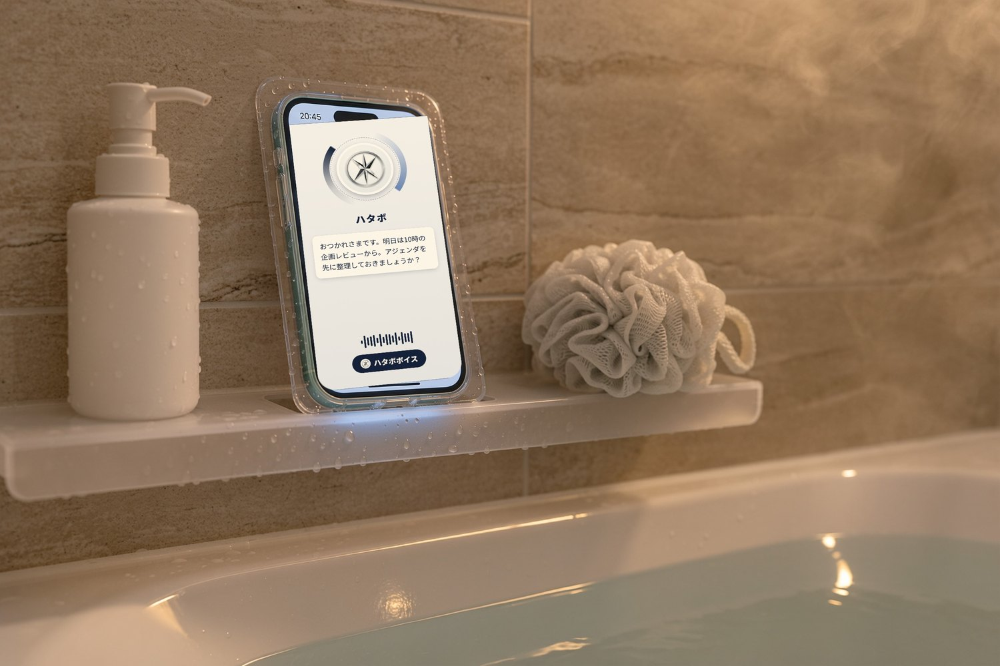
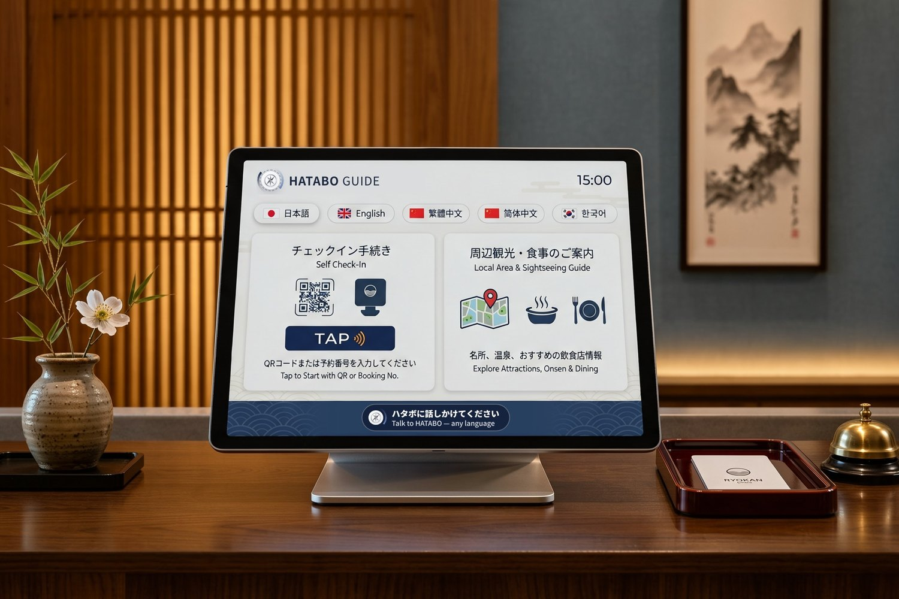

スマホとパソコンの愛棒
すべての人に、
AIのある愛棒を。
PCとスマホで話すだけ。あとは、ハタボが動く。家族とお店と会社のAIの愛棒。どこにでも、連れて行ける。AIの料金も伴走も、ぜんぶ月額に込み。
※公式LINEを友だち追加すると、申込相談担当のハタボが、合うプランをいっしょに選びます。サービス以外のご相談（調べもの・文章の下書き・雑談など）は、10日間のお試しで、あなた専用の愛棒にどうぞ。

人×AI×重なる力
働くハタボ。
「働」の字は、人（亻）と、重なる（重）と、力（力）。人とAIが重なると、ひとりではできなかった力になる。はたらく＝傍（はた）を楽にする、愛棒です。
TALK ／ ボイスイノベーション
読む・書く時代から、
AI時代は話す・聞くへ。
PC・スマホは、読み・書きから、話す・聞くだけで自走するAI時代へ。家でも、カフェでも、会社でも。PCとスマホで話すだけ。あとは、ハタボが動く。
話す・聞くだけでも、すべてできる。読む・書くも合わせた4つの柱で、AXとDXを進める。


写真はイメージです。
SCENES ／ シーン一覧
こんな場面で、AI棒が動く。
話すだけで、そばで働く。暮らしでも、お店でも、会社でも。
「あと1km、ペース少し上げようボー」ハタリス
「お昼のお薬、飲みましたか？」→ 家族に「元気です」ハタイエンタ（見守り報告）
「香りが好きなら、次はこちらはいかがですか」ハタエース

「配送は2日ほどです。ご予算は？」ハタエース／ハタボーラ

「明日の3件、順番はこうしようボー」ハタリス
「次は玉ねぎを炒めて。足りない物はリストに入れたボー」ハタイエンタ

「おはようございます。今日は9時からミーティングです」ハタイエンタ

「7たす5は？ ゆびで数えてみようボー」ハタイエンタ（学習モード）

「決まったことは3つ。宿題はAさんが金曜まで」ハタボーラ

「Check-in is from 3 pm」ハタエース
写真はイメージです。
LINEUP
あなたに合うハタボを選ぶ


CALM & PASSION
どちらかを、捨てない。
すべてを、手に入れる。
NEVER CHOOSE. HAVE IT ALL.
冷静な仕組みと、情熱のこもった関係。ハタボは、仕事と暮らしの「あちら立てればこちら立たず」を、ほどいていく。
HOW IT WORKS
PCとスマホで話すだけ。あとは、ハタボが動く。
友だち登録するだけ。スマホでもパソコンでも、文字でも声でも。
AIの料金、設定、困ったときの伴走まで。月々定額で、買い切りはありません。
使うほど合っていく。プランを変えても、覚えたことは引きつげます。
OWNERS CLUB
オーナーズクラブ AISAI・愛祭
聞くだけAIから、任せる愛棒へ。
同じAIなら、任さにゃ損。
ハタボを使う人だけの、愛が働く祭り。オーナーサポート、仲間との出会い、毎年のAI祭り（アワード）と4年に1度の祭り。
AISAIを見るFAQ
よくある質問
アプリを入れずに使えますか？
はい。PCかスマホでハタボを開くだけで始まります。LINEで書く・見るはオプションです。アプリを入れる必要はありません。パソコンでも使えます。
月額には何がふくまれますか？
AIの料金、はじめの設定（家庭・個人）、困ったときの伴走、新しいAIへの入れかえがふくまれます。
やめたら、育てたハタボはどうなりますか？
覚えたことは、ご本人がいつでも確かめて消せます。プランやラインナップを変えるときは、そのまま引きつげます。
個人情報は安全ですか？
家族やお店ごとに分けて保存し、お金や約束の前にはかならず人のOKをとります。くわしくは安心・セキュリティをご覧ください。